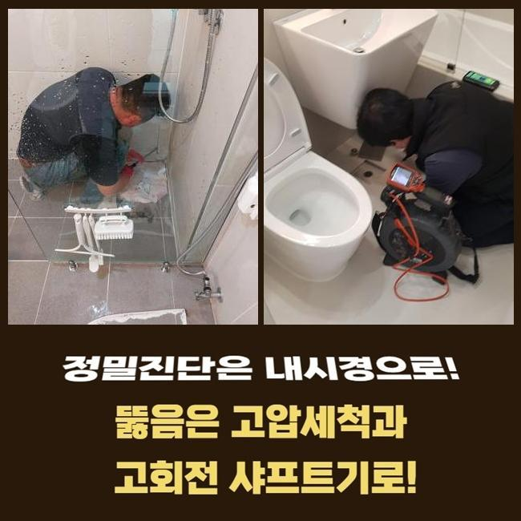
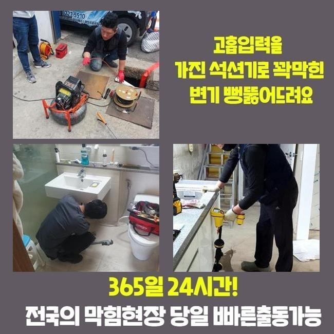
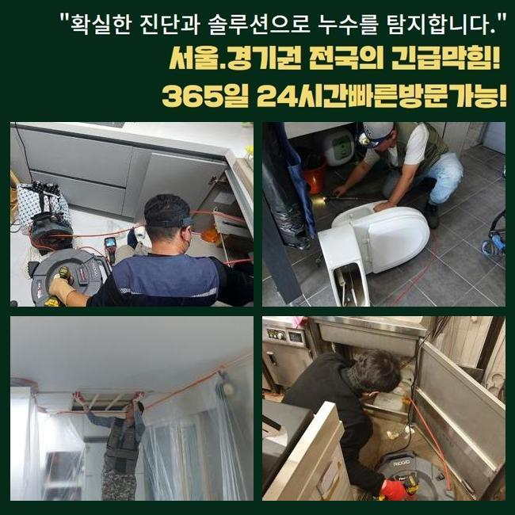
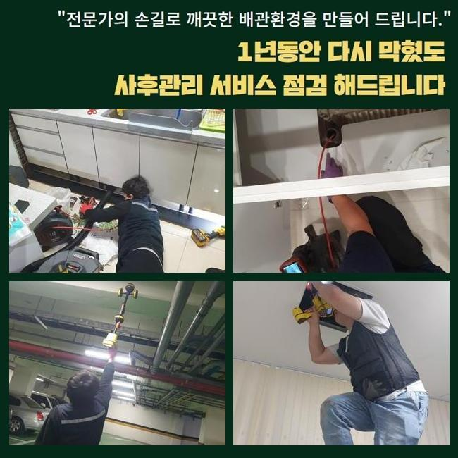
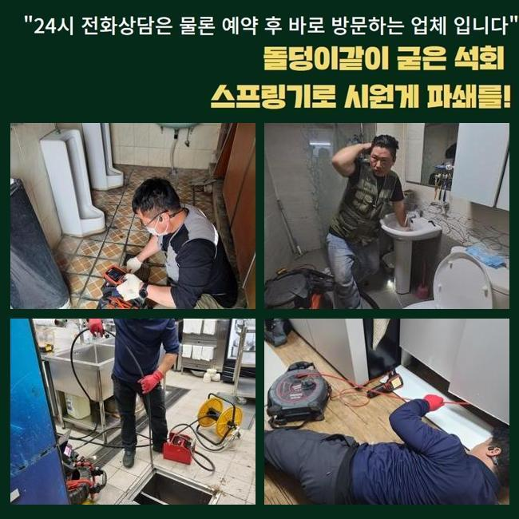
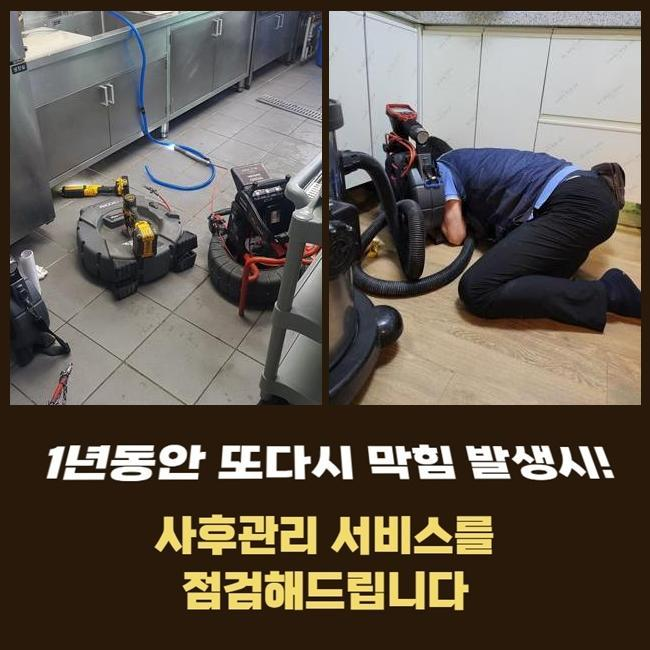
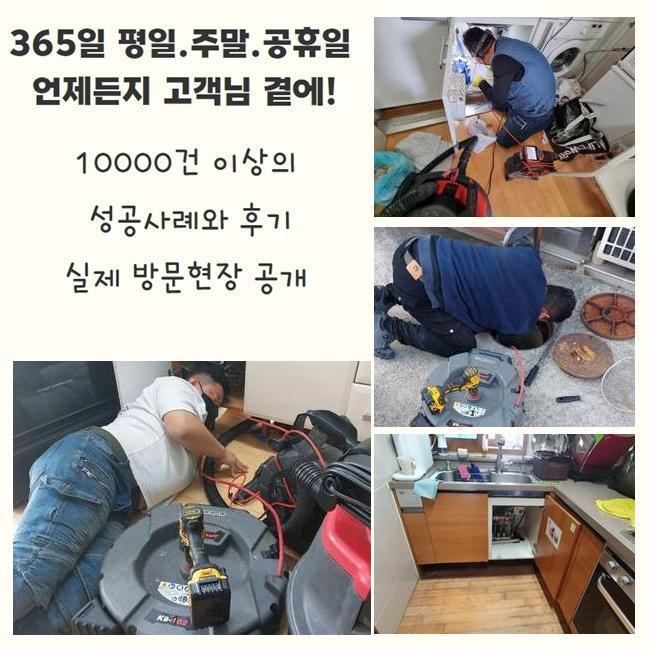

🏠 의정부 용현동욕실역류 가능동 하수구뚫는곳 출장수리
용인 하수구막힘 전문 시공 후기

📋 작업 개요
- 위치: 용인
- 서비스 유형: 하수구막힘, 배관막힘, 맨홀막힘, 누수수리, 역류해결, 뚫는업체, 배관청소, 고압세척, 설비공사
- 작업 일시: 2024. 11. 26. 10:22
- 업체명: 하수구수사대 (010-5615-2118)
🔍 문제 상황
의정부 용현동욕실역류 가능동 하수구뚫는곳 출장수리
배수공이 막혀버리는 사유는 굉장히 많다고볼수 있어요
대부분은 기름슬러지나 음식물이 누적되어서 문제를 일으키지만 그외로 시멘트나 돌덩이같은 물질들이 배수문제를 야기하기도 하죠
개수대쪽에 음식찌꺼기가 누증된다면 즉각적으로 치우는게 베스트라고 볼수있어요
그렇지만 그걸 늘상 이행해나가기는 굉장히 힘들다고 볼수있어요
그래서 기술자의 진단과 수선이 요구되는것이죠
시공에 요망되는 전문공구를 사용해 본원적인 부분을 신중히 탐색해나갑니다
저희가 그저께 내방한 곳은 주방배수관의 막힘 및 역류로 인하여 생활상의 어려움에 처하신 상황이었죠
비슷한 장애가 수회 표출되어 방치해서는 안되겠단 생각으로 문의하셨다고 하네요
손님분은 베이킹소다와 식초를 섞어서 관로에 투입하거나 네이버를 통해서 습득한 지식을 접목해보셨다 말하셨죠
하지만 한시적으로만 통수가 진행되었고 얼마후 트러블은 한층 강화되었다고 하셨습니다
그랬기에 앞으로도 이런방식으로 대처해 나가다간 해결이 난망할것이라 판단하였고 기술자의 점검을 받기로 결단하셨다고 하네요
저흰 일단 의뢰인의 그런 결심과 관련지어 칭찬해드리고 싶다고 말씀드렸죠
의뢰인께서 처리가능한 구간은 한계가 명확하고 점진적으로 고장이 깊어지기 쉬워서에요

🔎 원인 분석
💡 전문가 진단: 정밀 진단 장비를 사용하여 슬러지의 고착 여부를 판명하고 타격/세척 작업을 실시했습니다.
그상황을 만약에 지속해나가신다면 종국에는 다른 세대에도 손실을 끼칠수 있죠
저희들은 소지한 공구들을 사용하여 빠르게 트러블을 정리하였습니다
불빛을 키고 관로안을 비추니 추정한바와 같이 여러크기의 침전물이 적층을 이루고있었죠
그런 성분들이 결과적으로 물빠짐을 멈추도록 한거였죠
하수관 자체적으로는 훼손된 부분이 나타나지않아 누증된 이물을 처치하면 마무리지을수 있는 상황이었어요
전후모습을 확인하시게끔 배관내시경을 사용해 찍은 영상들을 제시하면서 공정을 설명드렸습니다
길목을 막았던 슬러지들이 깔끔히 청소되었다는 사실을 확실히 인지할수 있었습니다
저흰 타기술자가 처리못했거나 지속하여서 막힘증세가 나타나는 곳도 안가리고 방문드려요
작업여건이 마땅치않다고 꺼려하는 상황은 발생하지않으니 우려치않으셔도 돼요
장비들을 정리하는 동안에 현장 부근에서 전화를 주셨습니다
고객께선 맨홀에서 물이 누설되어서 바로 문의하셨다고 말하셨죠
올해 초에 수리업체가 와서 뚫음시공을 하고 간적이 있었는데 몇달도 안되어서 재발한 경우였어요
그업체에 전화해보았으나 연결이 잘안되어서 이번엔 배관막힘 잘뚫는곳으로 알아보신다음에 저희쪽으로 연락주셨다고 말하셨어요
즉각적으로 시공하기를 바라셔서 조사후 곧바로 업무를 시작했어요

🔧 작업 과정
본원적인 문제들을 알아내고 그것에 합당한 방안을 찾으려 우선적으로 내시경카메라를 투입시켜 관측했어요
업무차량에 매일 구비된 고속물세정장비를 가동하여 딱딱해진 오염물질을 세척하기로 하였습니다
100파이 사이즈의 중앙관은 소규모파이프를 청소할때와 같이 전동스프링 청소기로는 말끔하게 뚫리지 않아 재발위험이 있어요
그럴때는 여러종류의 방책을 종합해서 생각해봐야 합니다
한두가지의 방안만으로 누수증세나 막힘상황에 접근해버린다면 고장의 핵심사항을 알아내기 힘들며 실패확률이 높아지겠죠
해당 장소는 관로속을 고압세정장비로 씻어내고 노폐물들을 샅샅이 정리하는게 마땅하다는 결론이 나왔죠
배관 전반적인 부분을 단박에 세척하였기 때문에 상당량의 침전물이 토출되었습니다
소제한것에 연속하여 잘뚫렸는지도 꼼꼼히 체크하였습니다
이후에 반복하여 내시경cctv를 넣어서 확인해보았는데요
신규파이프로 대체한것같은 상태로 변한 내부모습을 관측할수 있었어요
정결하게 세정이 이행되었기에 차후에 역류가 생길 가망성은 적었죠
단 의뢰자께서 기름찌꺼기등을 무의식적으로 배수문에 흘려보낸다면 갑작스러운 막힘현상이 나타날수가 있단걸 안내드렸습니다
배관을 뚫을때 우선적으로 생각해야할건 정체의 이유를 명확히 알아내는 것이랍니다
그리고 복합적으로 검사해보는 과정도 중요합니다
역류증상으로 찾아왔지만 누수증상이 표출되었을수도 있고 공동배수관에 이상이 일어난걸 발굴할때도 많기 때문이죠
그런 모습들을 찾았다면 즉시 정리하여 부가적인 트러블을 방예해야합니다
음식점이 밀집된 건축물은 많은 사람이 드나들기에 막힘이 빈번하게 나타날 가능성이 크죠
주기적 진단이나 체계적인 관리시스템을 적용하여 설비관리를 하지않는다면 단계적으로 막힘현상이 일어날수 있습니다
그렇기 때문에 저희들은 모든 지점을 수리한후에는 적절한 관리법과 정기방문 시스템도 설명해드리죠
현장의 상황이 어찌되었든간에 처음으로 내시경설비를 적용하면서 시작하는데요
배수관내측을 더욱더 세밀하게 파악할수있고 결과적으로 작업시간을 절약할수가 있답니다
저희측은 최신식 기기를 통해 수리를 진행하기에 의뢰자댁에 내방하는 작업자는 숙련된 한명으로도 충분할때도 많답니다


✅ 작업 완료
맨홀의 역류문제가 보인다면 다른시설물로 장애가 전파되는 사태가 일어날수 있죠
고장이 발현된것을 인지하셨을때 연락주신다면 더욱 효율적인 대응이 이어질 것입니다
수회 고압세정을 한뒤에 하수관이 말끔해졌다는걸 내시경으로 재차 점검하고 마무리짓고 있답니다
하수관으로 물빠짐이 힘겹게 이루어진다면 전화면담을 우선해서 신청해보시길 부탁드립니다
내방전에 고장양상에 관련한 소통을 진행하고 진행될 작업내용과 공사비용을 말씀해드리겠습니다
관로막힘으로 답답한 상황이라면 저희쪽으로 문의해주십시오




⚠️ 베란다 누수 및 방수 관리 방법
- ✅ 비가 많이 올 때 창틀 주변이나 아래층 천장에 얼룩이 생기는지 정기적으로 확인해 보세요.
- ✅ 우수관 주변 실리콘 마감이 들뜨거나 깨진 틈새가 있는지 손상 여부를 수시로 체크하세요.
- ✅ 베란다 바닥 타일의 줄눈(메지)이 소실되면 그 틈으로 물이 침투하여 누수가 유발됩니다.
- ✅ 누수 의심 증상 발견 시 방치하면 아래층 손실이 커지므로 즉시 전문가의 진단을 받으십시오.
💡 핵심 정리
- 확실한 장비 작업(내시경 점검 및 샤프트 스케일링)으로 원인을 뿌리 뽑습니다.
- 작업 후 1년 이내에 동일한 부위 재발 시 100% 무상 A/S 서비스를 보장합니다.
- 서울 · 경기 · 인천 전 지역에 24시간 언제든 긴급 출동할 수 있도록 항시 대기 중입니다.
❓ 자주 묻는 질문 (FAQ)
🚨 용인 하수구막힘 문제로 고민이신가요?
정확한 원인 진단과 확실한 시공으로 재발 없는 해결을 약속드립니다.
24시간 긴급 출동 | 서울 · 경기 · 인천 전지역 | 1년 내 재발 시 무상 A/S